All crittersAlle diertjes
The sweet (and a few naughty) little animals of the Guhmension: birds, water critters, land critters and farm animals.
De lieve (en een paar stoute) diertjes van de Guhmensie: vogeltjes, waterdiertjes, landdiertjes en boerderijdieren.
Diertjes van de Guhmensie
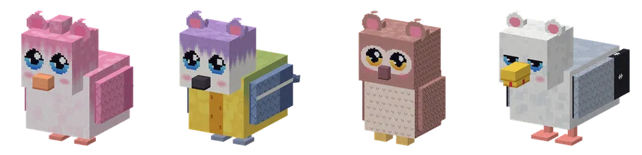
The four birdsDe vier vogeltjes
Pluisvinkje, kaasmeesje, guh-uiltje and zeemeeuwtje.Pluisvinkje, kaasmeesje, guh-uiltje en zeemeeuwtje.
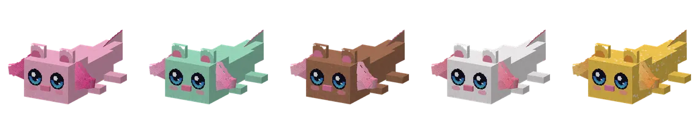
Five guhxolotlsVijf guhxolotls
Roze, mint, choco, wit and the rare goud.Roze, mint, choco, wit en de zeldzame goud.
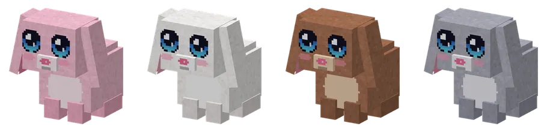
Guh-konijntjes
In four furs.In vier vachtjes.
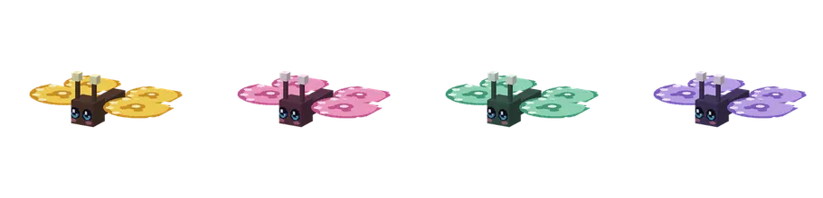
Knabbelvlindertjes
Kaasgeel, roze, mint and lila.Kaasgeel, roze, mint en lila.
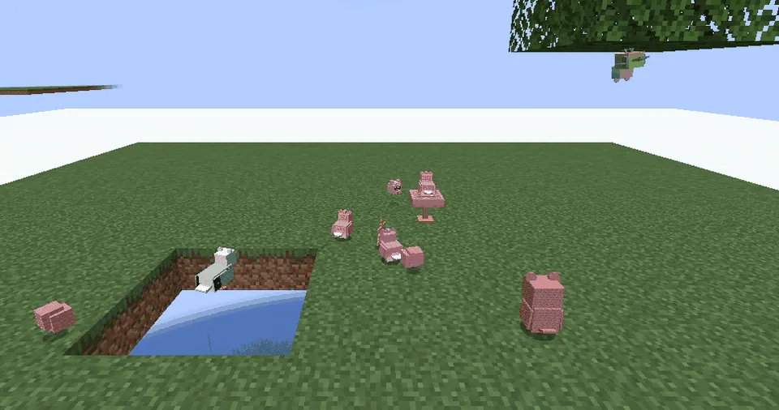
Birds by dayVogeltjes overdag
A flock of pluisvinkjes and a kaasmeesje hanging under a leaf.Een groepje pluisvinkjes en een kaasmeesje dat onder een blaadje hangt.
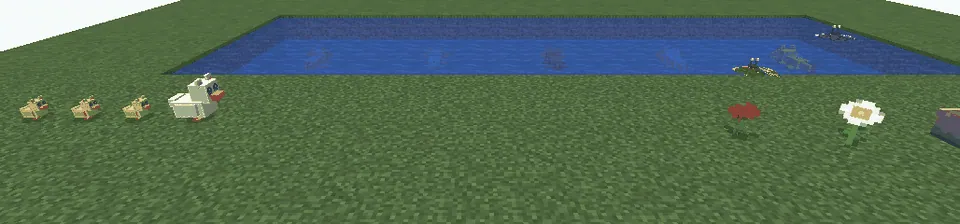
A rijtje of ducklingsEen rijtje kuikentjes
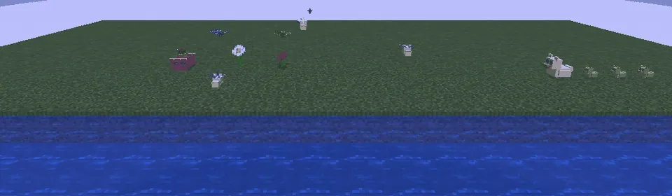
Glimguhtjes at nightGlimguhtjes 's nachts
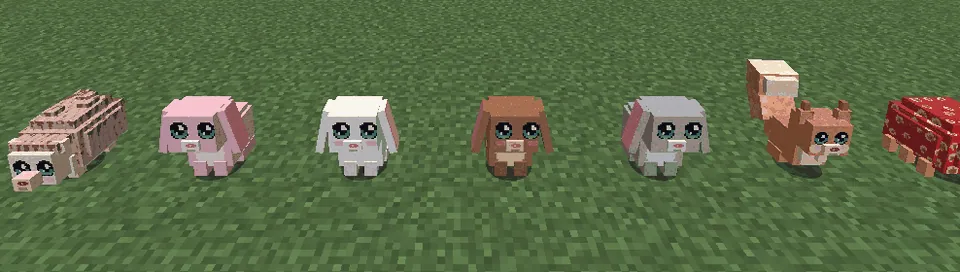
The little mammalsDe kleine zoogdiertjes
Egeltje, konijntjes, eekhoorntje and Sjokkel.Egeltje, konijntjes, eekhoorntje en Sjokkel.
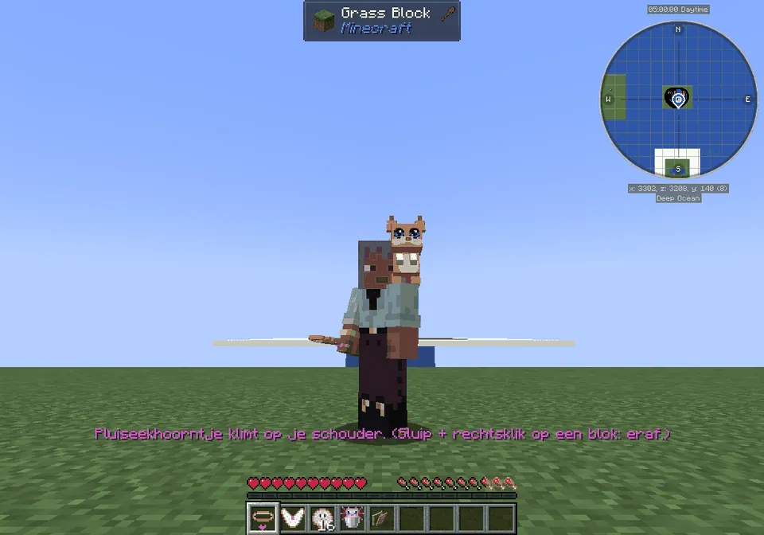
On your shoulderOp je schouder
A tamed pluiseekhoorntje.Een tam pluiseekhoorntje.
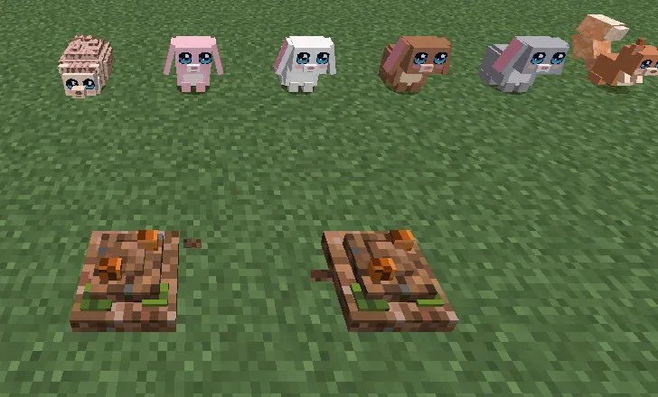
Knabbelvoorraadjes
Dig them up!Graaf ze op!
The Guhmension got a lot livelier: thirteen kinds of little critters, all lief and guh-inspired, but not guhs. Each one has a Guhdex page (they count for alles verzameld, and so does Sjokkel). The ones you can tame can also be picked up (sneak + right-click with an empty hand, like the pieppiepmuisje), they follow you or sit, and they can live in a guhhuisje. Most of them get startled if you run up to them: sneak to come close.
De Guhmensie is een stuk levendiger geworden: dertien soorten kleine diertjes, allemaal lief en guh-geïnspireerd, maar geen guhs. Elk heeft een Guhdex-pagina (die tellen mee voor alles verzameld, Sjokkel ook). De tembare kun je ook oppakken (sluipen + rechtsklik met een lege hand, net als het pieppiepmuisje), ze volgen je of blijven zitten, en ze kunnen in een guhhuisje wonen. De meeste schrikken als je op ze af rent: sluip dichterbij.
| CritterDiertje | WhereWaar | What it doesWat doet het | Tame withTemmen met | |
|---|---|---|---|---|
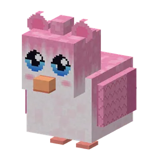 | Pluisvinkje | Guhvelden, Roze pluisjes, GuhweidesGuhvelden, Roze pluisjes, Guhweides | round pink-white finches with guh ears; fly in little flocks after their leader; drop pluisveertjes (more when you feed them seeds)ronde roze-witte vinkjes met guhoortjes; vliegen in groepjes achter hun leidertje aan; laten pluisveertjes vallen (vaker als je ze zaadjes geeft) | – |
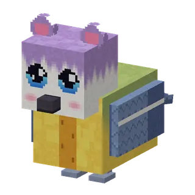 | Kaasmeesje | Vadswoud, KaasvlakteVadswoud, Kaasvlakte | hang upside down under the leaves and peck at knabbelbessen (they leave them for you); give berries and they sing tsjie-tsjie-bee!hangen ondersteboven onder de blaadjes en pikken aan knabbelbessen (die laten ze voor jou hangen); geef bessen en ze zingen tsjie-tsjie-bee! | – |
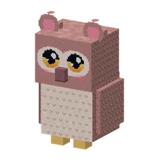 | Guh-uiltje | Guhpieken, Vadswoud (night)Guhpieken, Vadswoud ('s nachts) | sleeps fluffed up by day; at night its eyes glow and its head turns almost all the way round. Oehoe... njeg!slaapt overdag dik opgepluisd; 's nachts gloeien zijn oogjes en draait zijn kopje bijna helemaal rond. Oehoe... njeg! | – |
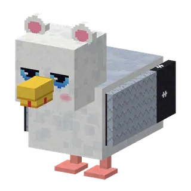 | Zeemeeuwtje | Guhzee, Diepe Guhzee, Guhwai'iGuhzee, Diepe Guhzee, Guhwai'i | hold a fish or bread and they circle over you shouting Mijn! Mijn!; they snatch fish or bread from the ground, never anything elsehoud een visje of brood vast en ze cirkelen boven je en roepen Mijn! Mijn!; ze pikken visjes of brood van de grond, nooit iets anders | – |
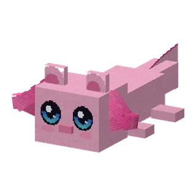 | Guhxolotl | pools of the Guhzee, Kaasmoerasvijvers van de Guhzee, Kaasmoeras | like an axolotl, with a round guh head and pink fluffy gills; roze, mint, choco, wit and very rare goud; plays dead when hurt; a water bucket scoops it into a guhxolotl-emmertje; button Blubbeltjes! (2 minutes of water breathing for you)zoals een axolotl, met een ronde guhkop en roze pluizige kieuwtjes; roze, mint, choco, wit en heel zeldzaam goud; speelt dood als hij gewond raakt; een emmer water schept hem in een guhxolotl-emmertje; knop Blubbeltjes! (2 minuten onder water ademen voor jou) | guhvisje (1 in 3)guhvisje (1 op 3) |
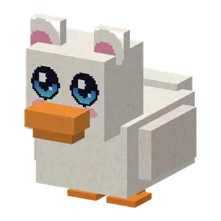 | Guh-eendje | ponds, Guhzee, Kaasmoerasvijvers, Guhzee, Kaasmoeras | a mama duck with guh ears and 2 to 4 fluffy yellow ducklings that follow her in a rijtje; breed them with seeds, bread or kaas knabbelseen mama-eendje met guhoortjes en 2 tot 4 pluizige gele kuikentjes die haar in een rijtje volgen; kweek ze met zaadjes, brood of kaasknabbels | – |
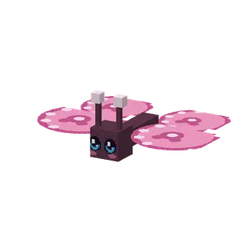 | Knabbelvlindertje | flowery land, by daybloemrijk land, overdag | four colours; flutter from flower to flower and sleep on one at nightvier kleurtjes; fladderen van bloem naar bloem en slapen 's nachts op een bloemetje | – |
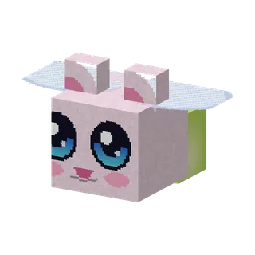 | Glimguhtje | Kaasmoeras, Guhweides (night)Kaasmoeras, Guhweides ('s nachts) | tiny round guhs with a lantern in their belly; they float in dreamy circles and fade away at sunrisepiepkleine ronde guhtjes met een lampje in hun buik; ze zweven in dromerige rondjes en glimmen weg bij zonsopgang | – |
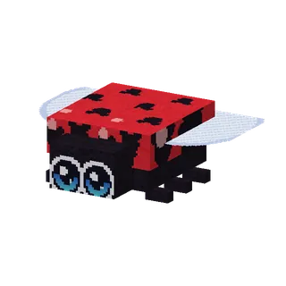 | Lieveheersbeestje | near flowers and guhtuintjesbij bloemen en guhtuintjes | spots shaped like guh heads; sits on your growing guhtuintjes and makes them grow a tick fasterstipjes in de vorm van guhkopjes; gaat op je groeiende guhtuintjes zitten en laat ze een tikje sneller groeien | – |
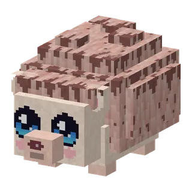 | Pluisegeltje | VadswoudVadswoud | fluffy spikes that never prick; rolls up into a ball when startled (sneak!) or when a Mika comes near; walks through berry bushes; button Rol eens!pluizige stekeltjes die nooit prikken; rolt zich op tot een bolletje als hij schrikt (sluip!) of als er een Mika in de buurt komt; loopt dwars door bessenstruiken; knop Rol eens! | sweet or glow berrieszoete bessen of gloeibessen |
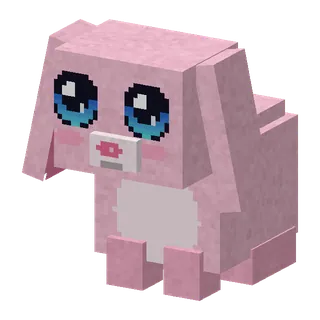 | Guh-konijntje | Guhweides (white ones in the Sneeuwguhtoendra)Guhweides (witte in de Sneeuwguhtoendra) | lop ears and a pompon tail; roze, wit, choco and grijs; hops away if you stomp; button Hophop!: a happy binky and Jump Boost for youhangoortjes en een pomponstaartje; roze, wit, choco en grijs; huppelt weg als je stampt; knop Hophop!: een blije binky en Sprongkracht voor jou | carrot, golden carrot or kaas knabbelwortel, gouden wortel of kaasknabbel |
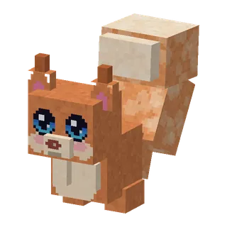 | Pluiseekhoorntje | Vadswoud, Roze pluisjes, GuhveldenVadswoud, Roze pluisjes, Guhvelden | a huge curly tail and ear tufts; buries knabbelvoorraadjes (right-click a little heap of dirt to dig one up); tamed it sits on your shoulder (Op mijn schouder!) and now and then digs up a stash for youeen enorme krulstaart en pluimpjes op zijn oortjes; begraaft knabbelvoorraadjes (rechtsklik een hoopje aarde om er een op te graven); getemd zit hij op je schouder (Op mijn schouder!) en graaft hij af en toe een voorraadje voor je op | kaas knabbelskaasknabbels |
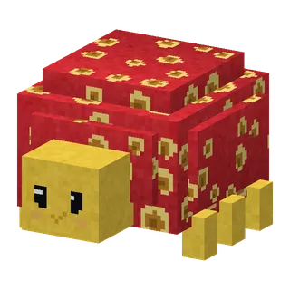 | Sjokkel | rocky coast of the kloon-eiland; very rare deep in the Gatenkaasgrottenrotskust van het kloon-eiland; heel zelden diep in de Gatenkaasgrotten | see D · Het kloon-eiland: shy, slow, makes bessensapje and polishes stoneszie D · Het kloon-eiland: verlegen, traag, maakt bessensapje en poetst steentjes | sweet berries (1 in 4)zoete bessen (1 op 4) |
| NameNaam | KindSoort | AboutOver | |
|---|---|---|---|
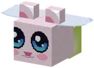 | Glimguhtje | CritterDiertje | Glimguhtje is a critter in Guhs. Its in-game text (Dutch): Een piepklein rond guhtje met een lampje in zijn...Een piepklein rond guhtje met een lampje in zijn buik. 's Nachts zweven ze in dromerige rondjes boven het... |
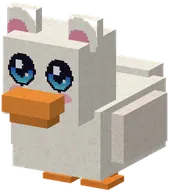 | Guh-eendje | CritterDiertje | Guh-eendje is a critter in Guhs. Its in-game text (Dutch): Een mama-eendje met guhoortjes en een rijtje...Een mama-eendje met guhoortjes en een rijtje pluizige gele kuikentjes achter zich aan. |
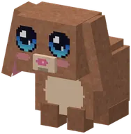 | Guh-konijntje | CritterDiertje | Guh-konijntje is a critter in Guhs. Its in-game text (Dutch): Een rond konijntje met lange hangoortjes, een...Een rond konijntje met lange hangoortjes, een wiebelsnoetje en een pomponstaartje. |
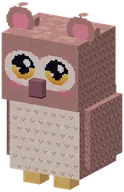 | Guh-uiltje | CritterDiertje | Guh-uiltje is a critter in Guhs. Its in-game text (Dutch): Overdag slaapt het guh-uiltje dik opgepluisd op...Overdag slaapt het guh-uiltje dik opgepluisd op een takje. 's Nachts gaan zijn oogjes open en gloeien ze in... |
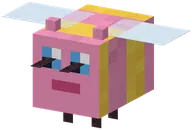 | Guhbij | CritterDiertje | A fluffy pink bee with guh eyes and little guh ears. Flies from flower to flower like a normal bee and fills...Een pluizige roze bij met guhogen en guhoortjes. Vliegt van bloem naar bloem zoals een gewone bij en vult een... |
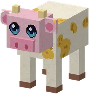 | Guhkoe | CritterDiertje | Guhboerderij: a happy one gives kaasmelk.Een vadsige koe met kaasvlekken (met gaatjes!), een roze guhsnoet en twee hoorntjes. |
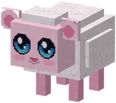 | Guhschaapje | CritterDiertje | Guhboerderij: a happy one drops pluiswol.Een wolkje pluiswol met een guhkopje en ronde guhoortjes. Aai, borstel en voer het: een blij schaapje laat... |
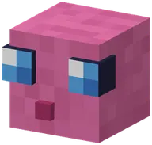 | Guhslijm | CritterDiertje | A pink slime with big guh eyes. Bounces around happily and splits like a normal slime, but it's a peaceful...Een roze slijm met grote guhogen. Stuitert vrolijk rond en splitst zoals een gewone slijm, maar het is een... |
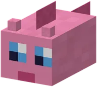 | Guhvis | CritterDiertje | Chubby pink fish with guh eyes, swimming in schools in the pink pools of the guh sea.Mollige roze visjes met guhogen, die in scholen zwemmen in de roze poelen van de guhzee. |
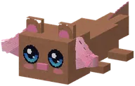 | Guhxolotl | CritterDiertje | Guhxolotl is a critter in Guhs. Its in-game text (Dutch): Een guh die een axolotl is: een ronde guhkop,...Een guh die een axolotl is: een ronde guhkop, guhoogjes, een snoetje, blosjes en roze pluizige kieuwtjes. |
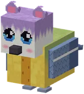 | Kaasmeesje | CritterDiertje | Kaasmeesje is a critter in Guhs. Its in-game text (Dutch): Een geel meesje met een kaasstreep (met gaatjes!)...Een geel meesje met een kaasstreep (met gaatjes!) op zijn buik en een lila guhpetje. |
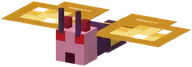 | Kaasmot | CritterDiertje | A tiny Mika moth (purple fluff, red eyes, devil tail, gatenkaas wings).Een piepklein Mika-motje met gatenkaas-vleugeltjes. Fladdert rond kaas en lampjes en pikt kaasknabbels van de... |
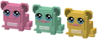 | Kikkerguh | CritterDiertje | "A guh that is a frog": the real guh head with two big round ears, glossy guh eyes, a small snoet and blush,...Kwaak-guh! Hupt rond in het Kaasmoeras, in roze, mint of geel. |
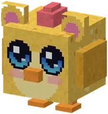 | Knabbelkippetje | CritterDiertje | Guhboerderij: a happy one lays a knabbelei.Een rond kaasgeel kippetje met grote guhogen. Als het blij is, legt het een knabbelei in een kippennestje. |
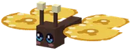 | Knabbelvlindertje | CritterDiertje | Knabbelvlindertje is a critter in Guhs. Its in-game text (Dutch): Een vlindertje met een piepklein guhkopje...Een vlindertje met een piepklein guhkopje en vleugels vol knabbelstipjes. In kaasgeel, roze, mint en lila. |
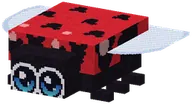 | Lieveheersbeestje | CritterDiertje | Lieveheersbeestje is a critter in Guhs. Its in-game text (Dutch): Een lieveheersbeestje met stipjes in de...Een lieveheersbeestje met stipjes in de vorm van guhkopjes. Het komt graag op je guhtuintjes zitten en laat... |
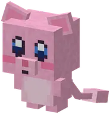 | Mieuwguh | CritterDiertje | A tiny pink floating guh with a long thin tail. She giggles at everything and makes somersaults in the air.Een piepklein roze zwevend guhtje met grote blauwe oogjes en een lange dunne staart met een bolletje. |
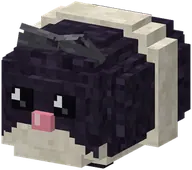 | Pieppiepmuisje | CritterDiertje | Rondvadsen, Volg mij, Piepjes, Verstoppertje and Op mijn schouder!Rondvadsen, Volg mij, Piepjes, Verstoppertje en Op mijn schouder! |
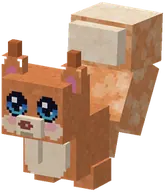 | Pluiseekhoorntje | CritterDiertje | Pluiseekhoorntje is a critter in Guhs. Its in-game text (Dutch): Een pluizig eekhoorntje met een enorme...Een pluizig eekhoorntje met een enorme krulstaart en pluimpjes op zijn oortjes. |
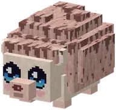 | Pluisegeltje | CritterDiertje | Pluisegeltje is a critter in Guhs. Its in-game text (Dutch): Een klein egeltje met zachte, pluizige...Een klein egeltje met zachte, pluizige stekeltjes: ze prikken nooit, het zijn eigenlijk knuffelstekeltjes. |
 | Pluisvinkje | CritterDiertje | Pluisvinkje is a critter in Guhs. Its in-game text (Dutch): Een rond roze-wit bolletje pluis met guhoortjes!Een rond roze-wit bolletje pluis met guhoortjes! Pluisvinkjes vliegen in groepjes achter hun leidertje aan en... |
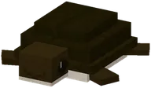 | Poepschilly | CritterDiertje | Careful: these are two different turtles. They look a lot alike (same shape, same size, both from the guhzee...Let op: dit zijn twee verschillende schildpadden. Ze lijken veel op elkaar (dezelfde vorm, even groot,... |
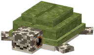 | Schilly | CritterDiertje | Schilly never cleans a guh. Schilly is a minihoofdje, and the guhs' bestie.Schilly poetst nooit een guh. Schilly is een minihoofdje, en de bestie van de guhs. |
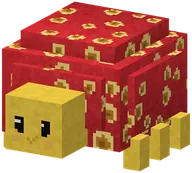 | Sjokkel | CritterDiertje | A red shell full of cheese holes, a little yellow head with bead eyes and yellow feet peeking out of the...Geen guh! Een rode schelp vol kaasgaatjes, een geel kopje met kraaloogjes en gele pootjes die uit de gaatjes... |
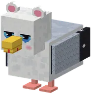 | Zeemeeuwtje | CritterDiertje | Zeemeeuwtje is a critter in Guhs. Its in-game text (Dutch): Mijn! Mijn! Een brutaal maar lief zeemeeuwtje.Mijn! Mijn! Een brutaal maar lief zeemeeuwtje. Hou een visje (of brood) vast en het hele strand komt boven je... |